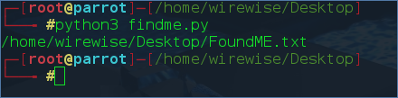

Hello,
My name is WireWise, today I will show you how to how to write some anti-forensics code in Python 3. None of this code is low-level anti-forensics(rootkits) in the way there is no kernel or user land hooks(I’m learning that and hopefully will post about it someday). Most of the code will be finding files by iterating through directories , opening and editing them, wiping them and changing their timestamps to the previous ones.
Lets Start!
First we will need to find a target file. Finding the file is the easiest part , since it’s just checking every file in the system if it matches a keyword or two, then doing some sort of operation on the file path. Let’s check out some code !
{kind=link}
This code is pretty self explanatory and basically compares every file on the computer with the string FoundME and if the result is True will then print the path to the file. I used the print function here but you could see how you could run other operations with the information you now have.
Output:

So that’s all for finding a file in a computer.
Now for Opening and editing files!
{kind=link}
So yeah that’s really it with file opening. Now let’s talk about what you can do now that you have successfully opened the file.
{kind=link}
Well that’s not all you can do. There is much much more. But this is all we need for now. Let’s now focus on file timestamps.
What are file timestamps ? To put it simply they are attributes of every file has that tell you : time is was changed , modified and accessed. Now you could see how this is valuable , you wouldn’t want a forensics investigator, hypothetically, know what files you accessed after you attack a system. 
The next photo will be code to changing file timestamps.
I haven’t actually perfected changing ctime(change) simply because of a annoying 0.016666666 delay , let me know if you know how to fix this, but I wanted to start studying something else so I didn’t and couldn’t fix it.
{kind=link}
What we learned to do : Find files , Open and edit them, wipe them and change their file timestamps.
Now I spent some time writing a tool that put this all together in a bigger scale, but also added a couple more things. But since the tool is around 550+ lines long I’m not going to go through bit by bit.
But I will tell you where to find it if you want to check it out yourself, what it can do and what I plan for it in the future.
Where I can find it?
https://github.com/WireWise/Anti-forensics
What can it do?
- Find a file using keywords and other arguments
- Delete a file
- Nano a file and change timestamps
- Edit , remove and nano Log’s then reverting timestamps
- Print information about computer.
What I plan to do to it in the future.
- Basically turn it into a kernel level rootkit
- Be way more useful
- Much much more…
So that is the end of my first post to 0x00sec. Great to be here. I will try to post more often , if i can. I’m going to start learning low-level programming for writting malware and exploit development. So I will try to post abit about that when I learn more about it.
Anyway’s thank you for reading my post.
Have a nice day.
-WireWise